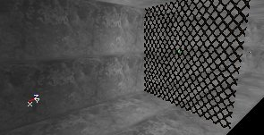
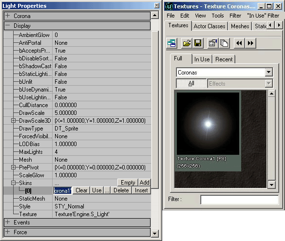
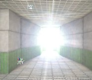
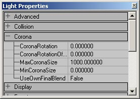

UDN
Search public documentation:
SpecialLightingFeaturesKR
English Translation
日本語訳
Interested in the Unreal Engine?
Visit the Unreal Technology site.
Looking for jobs and company info?
Check out the Epic games site.
Questions about support via UDN?
Contact the UDN Staff
日本語訳
Interested in the Unreal Engine?
Visit the Unreal Technology site.
Looking for jobs and company info?
Check out the Epic games site.
Questions about support via UDN?
Contact the UDN Staff
특수 조명 기능
문서 요약: 특수 조명 기능을 설정하는 방법을 설명하는 튜토리얼 문서 변경 내역: 좀 더 관리 가능한 문서로 분할하기 위해 Jason Lentz (DemiurgeStudios?) 에 의해 마지막 업데이트됨. 원저자: Lode Vandevenne(UdnStaff)개요
본 조명 튜토리얼 섹션에서 광원의 고급 사용법 및 다양한 조명 효과를 얻는 방법에 대해 설명합니다. 이 방법은 조명 외부의 속성 및 LightColor 속성을 사용해야 하지만 조금의 추가 작업으로 더 나은 효과를 얻을 수 있습니다.TexturePaletteLoop
LightType 을 LT_TexturePaletteLoop 로 설정하면 빛은 스킨의 팔레트 색상을 차례로 반복합니다. 팔레트는 8 비트 텍스처의 색상 테이블로 Photoshop 또는 PSP 에서 편집할 수 있습니다. 빛이 팔레트의 색상 배열과 같은 순서로 팔레트를 거칩니다. 모든 P8 텍스처가 팔레트를 가지므로TexturePaletteLoop 은 모든 P8 텍스처로 작동합니다. 가장 유용한 텍스처는 texturepackage Palettes.utx 이지만 빛의 색깔을 언제 어떤 색으로할지를 정확하게 정의하고 싶으면 팔레트를 직접 만들 수도 있습니다. 원하는 텍스처를 선택한 다음 빛의 Light Properties 로 이동하여 Display --> Skins 를 확장하고 Add 를 누른 다음 새로운 스킨에서 Use 를 누릅니다. 선택한 텍스처의 이름은 이제 텍스트 필드에 나타납니다.
원하는 텍스처를 선택한 다음 빛의 Light Properties 로 이동하여 Display --> Skins 를 확장하고 Add 를 누른 다음 새로운 스킨에서 Use 를 누릅니다. 선택한 텍스처의 이름은 이제 텍스트 필드에 나타납니다.
 LE_TexturePaletteLoop 를 사용하면 빛은 팔레트 색상을 순환합니다. LightPeriod 와 LightPhase 를 사용하여 효과의 속도 및 단계를 설정할 수 있습니다. LightHue 와 및 LightSaturation 팔레트의 색상을 대신 사용하기 때문에 무시되지만 LightBrightness 는 여전히 작동합니다.
팔레트 없이 텍스처(예 RGBA8 또는 DXT5 텍스처)를 스킨으로 대체하면 조명은 팔레트 색상이 순환되는 것과 달리 진한 색으로 빛나다 갑자기 어두워지고 점차적으로 빛나는, 같은 변화이지만 색깔은 포함되지 않습니다. 단, Texture Properties --> Texture 에서 팔레트 패키지 중 어느 하나를 채용하여 다른 팔레트를 할당할 수 있습니다. 이 경우 텍스처는 팔레트를 사용하지 않기 때문에 외형은 동일하지만 TexturePaletteLoop 에는 선택한 팔레트의 색상이 적용됩니다.
Corona 와 LT_TexturePaletteLoop 에 이런 동일한 Skin[0] 설정이 사용되었기에 corona 와 TexturePaletteLoop 에 각각 다른 텍스처를 사용할 수 없습니다. 그러나, 다만 개별 설정을 구성하려면 Corona 에 대해 RGBA8 또는 DXT 텍스처 사용하고 메뉴 Texture Properties --> Texture --> Palette 에서 원한 동일한 텍스처를 부여하십시오.
LE_TexturePaletteLoop 를 사용하면 빛은 팔레트 색상을 순환합니다. LightPeriod 와 LightPhase 를 사용하여 효과의 속도 및 단계를 설정할 수 있습니다. LightHue 와 및 LightSaturation 팔레트의 색상을 대신 사용하기 때문에 무시되지만 LightBrightness 는 여전히 작동합니다.
팔레트 없이 텍스처(예 RGBA8 또는 DXT5 텍스처)를 스킨으로 대체하면 조명은 팔레트 색상이 순환되는 것과 달리 진한 색으로 빛나다 갑자기 어두워지고 점차적으로 빛나는, 같은 변화이지만 색깔은 포함되지 않습니다. 단, Texture Properties --> Texture 에서 팔레트 패키지 중 어느 하나를 채용하여 다른 팔레트를 할당할 수 있습니다. 이 경우 텍스처는 팔레트를 사용하지 않기 때문에 외형은 동일하지만 TexturePaletteLoop 에는 선택한 팔레트의 색상이 적용됩니다.
Corona 와 LT_TexturePaletteLoop 에 이런 동일한 Skin[0] 설정이 사용되었기에 corona 와 TexturePaletteLoop 에 각각 다른 텍스처를 사용할 수 없습니다. 그러나, 다만 개별 설정을 구성하려면 Corona 에 대해 RGBA8 또는 DXT 텍스처 사용하고 메뉴 Texture Properties --> Texture --> Palette 에서 원한 동일한 텍스처를 부여하십시오.
TexturePaletteOnce
TexturePaletteOnce 는 TexturePaletteLoop 와 유사한 기능을 갖지만 단 한 번만 작용합니다. TexturePaletteOnce 는 일반 광원과 함께 사용할 수 없기 때문에 새로운 액터 클래스를 만들어야 합니다. 새로운 액터가 게임에서 생성되었을 때 팔레트의 색상을 한 번 반복하고 사라집니다. 이 새로운 액터 클래스는 다음 기본 속성을 가져야 합니다.- bStatic = False. 이 bStatic 설정에 대해 움직이는 빛 섹션을 참조해 주십시오.
- Advanced --> bNoDelete = False: 스폰된 액터를 반드시 삭제할 수 있도록 하려면 이 설정이 필요합니다.
- Advanced --> LifeSpan > 0: 액터의 사용 시간을 입력합니다. 이것은 팔레트의 색상을 루프하는 데 필요한 시간이기도 합니다. 예를 들면, <nopLifeSpan 을 3 초로 설정하면 액터가 한 번 스폰된 후 팔레트 모든 색상을 3 초안에 순환해버리고 사라집니다.
- Display --> Skin: 팔레트로 사용하고자 하는 스킨
- Lighting --> LightType = LT_TexturePaletteOnce
움직이는 빛
무버 또는 보간 경로를 움직이게 만들려고 빛을 부착할 수 있습니다. 스크립트된 날아가는 로켓 또는 손전등은 움직이는 빛을 사용합니다. 기본 설정에 의해 bStatic = True 로 되어있기 때문에 이것을 False 로 하면 해당 맵이 넷플레이에서 오류를 일으키는 원인이 되므로 표준 Light 액터를 움직이는 빛에 사용할 수 없습니다. 동적 광원을 작동하게 하려면 운영하려면 Lighting --> bDynamicLight = True 및 Advanced --> bMovable = True 로 설정하십시오. 위의 설정이 정확한 경우에만 예를 들어 matinee 경로를 따라 빛 이동하게 할 수 있습니다. 동적 빛은 그림자를 만들지 않고 단순히 빛을 설정 위치 주위에 구형 빛을 만들고 단단한 벽을 투과하여 빛을 발휘합니다. 왼쪽의 이미지는 정적 빛이고 오른쪽은 동적 빛의 예입니다.

LightEffect 및 LightType 은 움직이고 있는 빛과 Corona 에서 작동하지만 코로나를 보는 카메라의 위치에 따라 코로나가 움직이지 않는 것처럼 나타나는 문제가 있습니다.Coronas (코로나)
코로나는 광원에 배치되는 2D 사진입니다. 2D sprite 와 다른 점은 2D sprite 의 경우 멀어질수록 화면에 작게 표시되지만, 빛의 코로나는 화면에 항상 같은 크기로 표시된다는 점입니다. 코로나는 매우 멋진 효과에 사용되고 맵에 많은 환경 요소를 추가하는데 사용됩니다. 빛에 코로나를 부여하려면 Light Properties --> Lighting --> bCorona 를 True 로 설정하십시오. 그런 다음 Display --> Skins 로 이동하여 Add 를 누른 다음 [0] 을 선택합니다. Texture Browser 에서 텍스처를 선택하고 Use 를 누릅니다.
다음으로 형상을 다시 빌드합니다. 카메라가 빛에 충분히 가까운 경우, 코로나가 표시됩니다. 코로나의 크기를 변경하려면 Display --> DrawScale 을 사용합니다. 작은 코로나를 만들려면 이 값을 1 보다 작게 설정하고 큰 코로나의 경우 더 크게합니다.


LightRadius 는 코로나의 가시 범위를 결정합니다. 조명 구체의 반경과 코로나의 범위를 개별적으로 변경할 수 없습니다. 아주 작은 반경이면서도 코로나를 사용하여 아주 먼 거리에서도 볼 수 있도록 빛을 만들고 싶다면 빛을 2 개 만듭니다. 하나는 코로나 없는 작은 반경의 빛이고 다른 하나는 코로나가 첨부된 LightBrightness = 0 인 큰 반경의 빛입니다. Light Properties 의 Corona 탭에는 설정이 필요한 변수가 몇 개 더 있습니다. 이러한 변수들은 멋진 효과를 추가하는 것뿐만 아니라 코로나의 속성 (attributes)를 잘 조절할 수 있게 하여줍니다.
- CoronaRotation (코로나 회전): 이 속성은 카메라가 코로나에 접근할 때 코로나의 회전 속도를 조정합니다. 1.0 보다 큰 값으로 설정하면 접근하거나 멀어질 때 코로나 회전을 더 빠르게 하는 한편, 1 보다 작은 값이면 회전을 줄여 효과를 느리게 합니다.
- CoronaRotationOffset (코로나 회전 오프셋): 이것은 Corona 스킨의 초기 오프셋을 정의합니다. 설정하고자 하는 코라나 회전과 거리가 정해져 있는 경우, 원하는 회전이 되도록 값을 수정합니다. 회전의 표준 Unreal 단위는 모든 원형에 65536 (360 � 대신)을 사용합니다. 이는 즉 180 �의 회전인 경우 32768 이고 45 � 각도이면 16384 입니다.
- MaxCoronaSize (최대 코로나 크기): Corona 는 귀하가 접근하거나 멀어지면 크기를 실제 변경합니다. 멀리 갈수록 더 커집니다. 이 값은 코로나 크기 제한을 설정합니다. LightRadius(Light Properties (Light Properties --> Lighting 아래)가 낮게 설정되어 있는 경우 코로나는 최대 크기까지 커지지 못할 수 있습니다. Light nop>LightRadius 가 64 인 경우 MaxCoronaSize 는 1000 입니다. 이 MaxCoronaSize? 가 2000 이길 원하면 그리기 스케일을 2 배로 하거나 LightRadius 를 128 로 설정하십시오.
- MinCoronaSize (코로나 최소 크기): 코로나에 접근함에 따라 줄어들지만,이 값을 변경함으로써 코로나 축소 하한값을 설정합니다.
- UseOwnFinalBlend (고유의 최종 혼합 사용): 코로나는 고유의 FinalBlend 재질을 사용하지만 사용자 지정을 사용하게 하려면 자신만의 고유 FinalBlend 재질을 만들 수 있습니다. 일단 이 값을 True 로 설정하고 Light Properties --> Display --> Skins 아래의 Corona 에 대해 일반적으로 사용하는 텍스처를 대체하는 FinalBlend 재질을 지정할 수 있습니다.
투영 텍스처
투영 텍스처를 사용하면 그림자를 페인트하고, 그 그림자에 메쉬, 정적 메쉬, 터레인, BSP 를 포함하지만 입자를 제외한 모든 것을 투영시킬 수 있습니다. 자세한 내용은 UDN에 게시될 Projective Textures Tutorial (투영 텍스처 튜토리얼)을 참조하십시오. 예를 들면,이 나무의 그늘은 광선 추적이 아닌 Projective Texture (투영 텍스처)에 의해 만들어집니다. 자세히 보면 이 그림자가 얼마나 정밀하게 표현되고, BSP 표면에 광선 추적된 그림자보다 높은 음영에서 훨씬 더 세밀하게 표현되는 것을 아실 것입니다. 이 그림자의 장점은 어떤 종류의 형상에서도 일정하게 보이고, 무기를 가지고 나무를 걸으면 무기에 그림자가 비쳐 보이거나 다른 플레이어가 나무 위에 서 있으면 나뭇잎 그림자기 그 플레이어게 지는 것을 볼 수 있습니다. 스테인드 글라스를 투과하는 빛에 컬러 투영 텍스처를, 회전하는 팬의 그림자에 애니메이션화된 투영 텍스처를 사용할 수 있습니다. 프로젝터 (Projector) 에 대한 자세한 내용은 ProjectorsTableOfContentsKR? 를 참조하십시오.
스테인드 글라스를 투과하는 빛에 컬러 투영 텍스처를, 회전하는 팬의 그림자에 애니메이션화된 투영 텍스처를 사용할 수 있습니다. 프로젝터 (Projector) 에 대한 자세한 내용은 ProjectorsTableOfContentsKR? 를 참조하십시오.